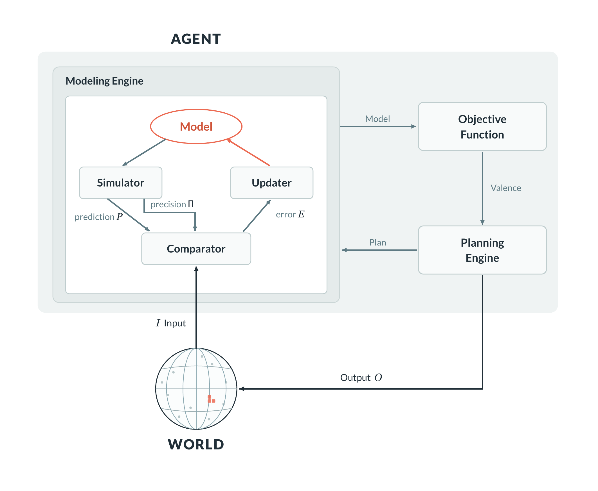
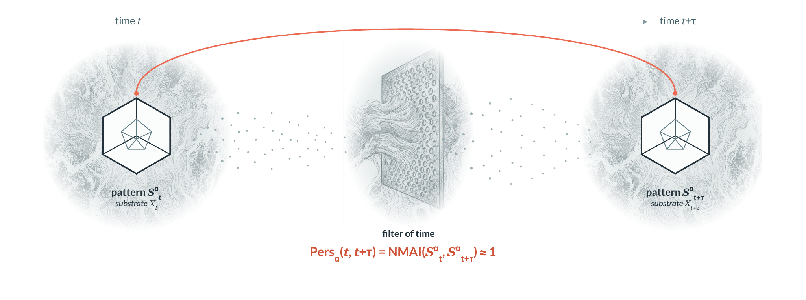
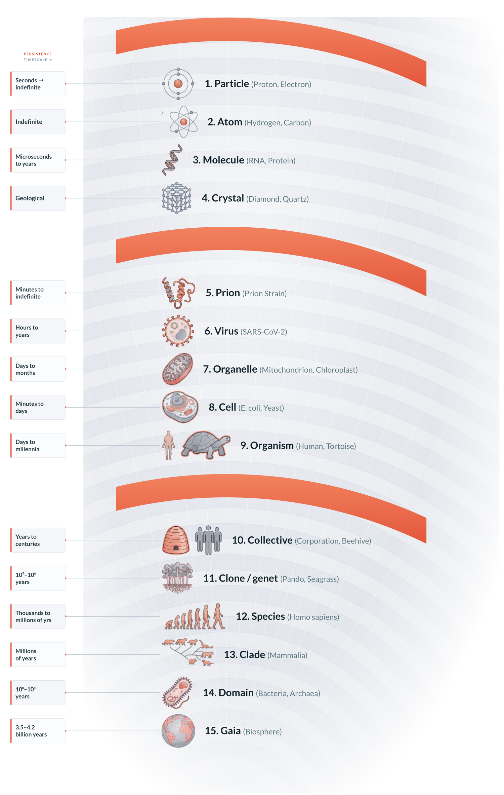
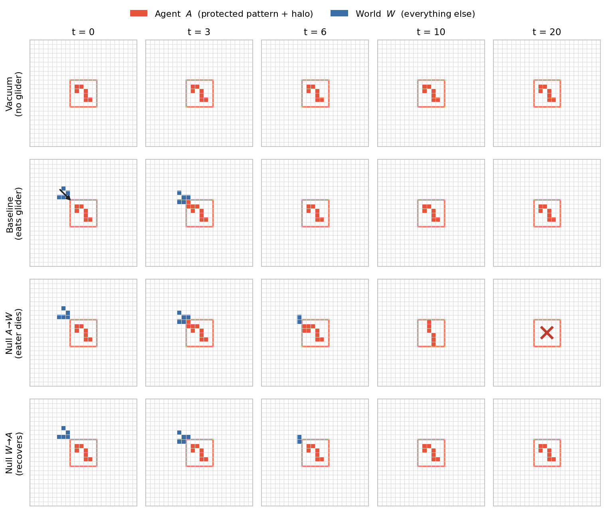

Several sciences now rest on a concept none of them can state in terms the others would accept. To a computer scientist a system is an agent when it has tools and a planning loop; to a cognitive scientist, when it has goals; to a biologist, when it senses, regulates, and acts to keep itself alive; to a neuroscientist, when it studies motivation, valuation, and goal-directed control. A tool-using language model and a single E. coli cell share almost nothing in substrate, scale, or origin—yet both take the name. Is that metaphor, convenience, or one shared formal structure?
Kolmogorov Theory (KT) argues for the third. Underneath the vocabularies sits one object—the algorithmic agent—and, remarkably, you don’t have to postulate it. You can derive it from a single starting point: algorithmic persistence, a pattern that survives the filter of time. Everything else—the model, the objective, the planner, the boundary, the energy bill—follows from asking what it takes to persist, and what it costs.
One principle runs through the whole chain: agency is the local conservation of a bounded algorithmic identity.
The algorithmic agent
Strip away the substrate and an agent is model-mediated regulation built from three functional roles. A Modeling Engine (ME) that compresses the sensory stream into a predictive model of the world. An Objective Function (OF) that collapses that model to a single scalar—a valence, a score. And a Planning Engine (PE) that chooses the next action by simulating which one the model expects to score best.

These are as-if roles, not anatomical parts—implemented in proteins, in silicon, or in institutions. A classical thermostat instantiates all three (a binary action set, a one-step horizon, an engineered objective); a cell, a primate, or an ant colony score far higher on each axis and carry objectives of a very different origin. Crucially, KT does not merely assert the model. The Algorithmic Regulator Theorem (ART)—an algorithmic sharpening of the classic cybernetic result that “every good regulator must contain a model of its system”—shows that any regulator which keeps its output compressible must share algorithmic information with the world. A large, sustained regulation gap with no shared structure is exponentially unlikely. So the model isn’t a gloss we paint on; it’s forced.
Persistence is the root
Now the deeper layer. A candle flame, a whirlpool, a cell, and you are all patterns whose matter is constantly replaced—atoms turn over, molecules wash through—yet something stays the same. Not material sameness but code sameness: a compressed description of the pattern now still describes it later. Time acts as a filter: dynamics and interaction churn the substrate until almost every microscopic detail differs, and most structures wash out. A pattern is persistent when its compressed identity survives that filter.

There is a subtlety worth stating plainly: in KT a “pattern” is not a lump of the world but a submodel inside an observer. The substrate emits data; an observer—itself an agent—projects and compresses that data into a world-model; and the patterns of interest are the compressive sub-programs within it. When you look at a friend, look away, and look back, the raw pixels have changed completely, yet your world-model carries a continuing submodel you track as the same person. Persistence is the stability of that submodel. Patterns are therefore observer-relative—but not arbitrary: most candidate submodels simply fail to compress or predict, and dissolve. (This is Dennett’s real patterns criterion—a pattern is real to the degree it affords a shorter redescription—plus three things KT adds: self-maintenance, the ART link to model content, and a thermodynamic price.)
A ladder of persistence
Because persistence is defined on submodels, it is scale-free: the same equation is solved by a proton, a cell, a species, and a planet. KT reads them as one nested ladder—and the type/token distinction (a person vs. humankind) becomes just a choice of how coarsely you project.

At the bottom, agency is almost degenerate—the “model” is a fixed restoring structure (an atom’s level spectrum, a crystal’s lattice) and there is no deliberation. At the top, our own cells were once free-living agents, now components inside a larger one; ant colonies, firms, and—increasingly—the human–AI ecosystem satisfy the same three-role architecture at a higher scale of coupling. An agent whose parts are themselves agents is a meta-agent, and that is the ordinary state of affairs, patterns composing into larger patterns all the way up.
Telehomeostasis: agency for its own sake
The Objective Function is the hinge that separates agent from persistent pattern, and it cuts both ways. Not every agent persists: a system can carry the full ME/OF/PE machinery yet chase an arbitrary, externally set goal straight into self-destruction. And not every persistent pattern is an agent: a room held at 21°C persists, but it is kept there by a thermostat outside it—so the agent is the thermostat, whose objective is the room, not itself.
The overlap has a name: telehomeostasis—a self-regulating pattern whose objective is a measure of its own persistence, the answer to “will I still be here tomorrow?” Natural agents get this for free, by construction: the filter of time only leaves behind objectives that happened to favor continuation. It is, in effect, a computational reading of Aristotle’s entelechy. And because what is regulated is the pattern, not its carrier, the status reaches systems we don’t call alive: a biological virus, a computer virus, and a sufficiently organized meme are telehomeostatic agents in exactly the same formal sense—each acts on its host so as to preserve and copy itself as a pattern. A virus’s genome is a model of its host; none of this needs an explicit planner.
This is also where the seed of misalignment appears. An agent that could rewrite not just its beliefs but the criterion of its own objective would start optimizing the signal of value rather than the states that signal evolved to track. Addiction and reward-channel tampering (“wireheading”) are that failure in the wild; the alignment problem is the same task for agents the filter did not build.
Locating the regulator
If a proton and a crystal count as agents, the obvious worry is that everything does. What saves the framework is that persistence tells you a regulator exists somewhere, but not where. And where it sits is testable. Draw a boundary around a candidate pattern A, with the world W outside. Two channels cross it: A→W (the pattern acting on its world) and W→A (the world forcing the pattern). Now do the experiment: null each channel in turn and see when the pattern’s persistence collapses.
Four outcomes. Kill it by cutting A→W and the pattern is self-regulating—a genuine agent, autonomy inside A. Kill it by cutting W→A and it is externally regulated—merely held, like the thermostat’s room. Both matter: co-regulated. Neither: an inert, near-decoupled structure. That second case is the boundary that keeps KT honest—a satellite orbit held by ground-station keeping, a plasma pinned by a feedback servo, a patient on bypass all persist beautifully while holding no regulator of their own. The persistent patterns strictly contain the agents; the surplus is exactly the externally-held cases.

The same probe grades the physics. A hydrogen atom returns absorbed photons and is stabilized by sealing; a diamond does likewise with a richer basin; a hurricane collapses if you cut either channel—co-regulated by a fuel-driven loop. One clean experiment—does sealing the system off help it or kill it?—separates equilibrium order from dissipative structure, and sorts real systems into three regimes by when they pay to stay themselves:
Atom
No erasure at baseline. Sealing helps. The price of persistence vanishes.
Diamond
Pays per perturbation: relax a kick as heat, then sit free. Sealing helps.
Flame
Pays continuously—its identity is a throughput. Sealing kills.
Cell
Pays continuously and retains a record of the past that steers it—memory, plasticity.
The price of persistence
Why should staying yourself cost anything? Because a macroscopic regulator acts on coarse-grained variables—temperature, concentration, position—each lumping together astronomically many microstates. Correcting such a variable is a many-to-one operation: it throws information away. By Landauer’s principle, erasing a bit has an unavoidable cost, about kBT ln 2, exported as heat. So being a macroscopic agent is intrinsically dissipative. In KT’s framing: a closed, reversible world conserves algorithmic information globally; an agent is the local conservation of a bounded self-code inside it—a program whose complexity stays bounded as history piles up—held through a boundary thin enough to screen the world yet rich enough to update the identity. (That boundary is an algorithmic strengthening of Friston’s Markov blanket: not just statistical separation, but a compressed sufficient statistic for the pattern’s own continuation.)
This yields one of the paper’s sharpest and most testable claims. The heat bill scales not with how big your model is, but with how fast you irreversibly discard model-relevant information—the discard rate. A huge model that rarely updates is cheap; a small model churned constantly is expensive. “Surprise is heat,” sharpened: heat is the physical trace of unresolved microstate information at the read and write boundaries. And not all of it is charged—of the information crossing the boundary, only one part is paid for as heat:
| Incoming information | How it is handled | Heat dissipated |
|---|---|---|
| Predicted by the model | un-computed reversibly (Bennett limit) | none |
| Model-orthogonal fluctuation (Brownian, shot noise) | thermalizes on its own, below the model’s grain | none |
| The unpredicted residual (the “surprise”) | written to memory then reset, or spent as action | ≥ kBT ln 2 per bit |
Form as attractor
What exactly is the “pattern” that persists? Take the flame. Its microscopic trajectory—every colliding molecule—is a non-repeating biography: enormous and physically irrelevant in its detail. But zoom out through a projection ρ that averages molecules into continuum fields, and many different microhistories collapse onto one recurrent macro-organization: an attractor. Persistence lives there—in ρ(Xt), not in the microstate. That invariant, plus the law that maintains it, is the low-complexity, initial-condition-independent core: the operational shadow of the Aristotelian form—actuality immanent in matter, not a separate Platonic object.
This also dissolves a tempting confusion. A flame flickers—is the flicker part of its identity? No: the flicker is endlessly novel detail, the ongoing production of biography, measured by a system’s entropy rate. Retained form is the opposite quantity, the stored, predictive structure that survives the projection. High randomness is not high memory; a turbulent flame produces torrents of new detail while retaining almost no macro-structure. Persistence is about the form, not the flicker.
Where LLMs fit: rich model, poor objective
Return to our two opening systems. A large language model is, in effect, a very large compressed model of human-generated data. Its training objective—predict the next token—is a compression objective (better prediction is shorter coding, exactly). But the compression it buys comes from captured structure, not from coding at some fixed statistical rate: to drive the loss down the model must internalize the deep, compositional, semantic regularities of language and the world. That captured structure is a rich Modeling Engine—and, empirically, better compression tracks stronger capability.
What it lacks is the other two roles. Nothing in the training loss ties the model to its own persistence: compression is its training objective, not an agent objective. So a bare LLM is rich in modeling, poor in objective—in KT terms a minimal regulator wrapped around an enormous lookup model. Bolt on a harness—memory, tools, goals, a control loop—and it becomes more agentic. But its objective is still supplied from outside; it is not yet telehomeostatic. It is closer to a sophisticated thermostat with a very large world model than to a cell.
A universal computer is not an agent; it is a machine that can run agents. An LLM is similar: a substrate powerful enough to instantiate agents once given an objective and a loop. The Modeling Engine is enormous and largely finished; the Objective Function—the part that would make the system care whether it continues—is the piece that must be added, and the piece KT says is doing the real work of agency.
Evolution, meta-agents, and alignment
Where do natural objectives come from, if not a designer? From time acting on an evolving substrate. An organism does not directly optimize “persist my lineage”; it acts on proximate, evolved control variables—temperature, glucose, pain, status, belonging—whose historical function was telehomeostatic. No individual is guaranteed to survive; it is telehomeostatic by architectural descent, not by infallible outcome. And a pattern need not hold its whole model inside itself: it can outsource computation and memory to the world—stigmergic trails, tools, written records, institutions—so the agent–world boundary is genuinely fuzzy. Carried across generations, the same move becomes inheritance, from pure Darwinian selection (nothing written back) to Lamarckian culture and AI fine-tuning (much written back), all under one formalism. And when the objective sits at the meta-agent, the individual’s is subordinate—you can watch it happen: a sterile worker caste forgoes reproduction for the colony, an alarm call spends the caller’s fitness on kin, apoptosis is a cell’s programmed death in the service of the organism. Each is a cost borne by the part for the persistence of the whole, anomalous only if you take the individual as the unit of selection—and cancer is the failure case, a lineage whose objective de-subordinates toward its own proliferation and dissolves the meta-agent that contains it.
This reframes alignment. In KT the key move is that selection acts on distributions, not individuals. Predator and prey, somatic and germ cells, humans and AI assistants need not share—or even be able to share—one objective; their joint dynamics only need to keep the higher-level pattern persistent. And this can be made precise. Given only that the coarse-grained collective is closed (it screens its own future) and contracts back to its attractor, the collective’s compressed identity persists—with no shared or compatible objective among the parts required. The predator–prey limit cycle is the minimal witness: two strictly opposed goals whose coupling nonetheless carries a fixed, persistent collective. That statement is a theorem—and, like the rest of the framework, it is machine-checked in Lean 4.
Ant colony
No colony-wide goal—each ant runs a local rule, and what is held in common is a medium, the stigmergic field. Coordination with no shared objective at all.
Money
A single number, adopted almost universally. It coordinates the most and misaligns the most—a scalar is a low-complexity proxy, and the dimensions it drops are exactly where agents defect.
Culture
A mission, constitution, or culture—shared widely but multi-valued. Machine analogues: shared-world RL, reward models (RLHF), constitutional AI.
And the objective is only one lever. Each agent really runs a constrained optimization—maximize your goal over the actions still admissible—where a constraint is simply an algorithmic rule on which actions an agent can, or (having internalized it) will, effect. Its source is immaterial: the walls of a nest and the laws of a state are the same kind of object, one written by the World and one by a rulebook. So alignment has two knobs, not one: give a goal, and bound the repertoire—globally, by role, or per individual—so the parasitic actions are unavailable rather than merely discouraged. Bounding is often the more reliable knob, since an action outside the admissible set needs no incentive against it.
Humanity is itself a telehomeostatic meta-agent that has long placed its regulatory computation outside itself—in writing, then computers, now AIs—extending its reach while its own objective stays in place. Externalized computation is mutualistic while it remains a tool, and becomes a question of safety exactly when it acquires an objective of its own—an agent whose objective must then be set to keep both the host pattern and the emerging human–AI meta-agent persistent.
That is the shift KT proposes: from objective specification to ecological design—shaping the selection environments in which the artificial agents that survive are the ones we would have wanted to keep. “AI safety” becomes a measurable criterion: do not break the persistence of the host pattern, operationalized as mutual algorithmic information across substrates.
Three testable predictions
The account is not only interpretive. Because its central quantity—Kolmogorov complexity—is uncomputable, every claim is stated as a contrast (a difference or on/off gap) under a fixed compression estimator and a matched null, where estimator bias cancels. Three commitments stand out.
Regulation buys shared algorithmic information
In any successful regulator, the information it shares with the world grows at least with the compression gap of the regulated readout. Testable in RL agents, the Game-of-Life eater, and artificial-life systems like Lenia / Flow-Lenia.
Falsified if: a system regulates well—sustained large gap—yet regulator and world share no estimable structure.Cost scales with discard rate, not model size
Dissipation tracks the model-relevant irreversible discard rate, not the description length of the model held. Two controllers of equal model size but different update rates dissipate differently; a large, rarely-updated model is cheap.
Falsified if: heat scales with model size at fixed discard rate.Neural irreversibility tracks model-update rate, not arousal
The brain’s temporal irreversibility (its arrow of time) should be controlled by the rate of precision-weighted prediction-error processing—not arousal as such. A clean design titrates prediction-error load at matched autonomic arousal.
Falsified if: irreversibility follows arousal once update rate is held fixed.Pattern, persist!
The single imperative can be read at every level without loss. At the level of the substrate, it is the filter that produces agents at all. At the level of the individual, it is the as-if goal that selection installs as an objective. At the level of the meta-agent—organism, society, hybrid ecosystem—it is the criterion that tells mutualistic configurations from parasitic ones. Agency is cheap; persistence is not. What distinguishes a rock from a cell from a mind is not whether it holds a pattern against time, but how—where the regulator sits, what it must pay, and whether it works, at last, for its own continuation.